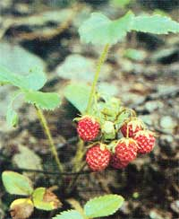
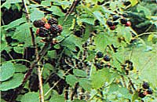
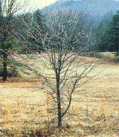
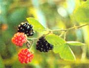

Move some of nature's most delicious edibles into your yard and garden.
With rural land being gobbled up at a rapid rate, it's increasingly difficult to forage many once-common wild delicacies. However, we've found that grafting a few scions from an old roadside apple tree to commercial rootstocks can insure our household against the awful possibility, some autumn, that our nearby wild apple source will be bulldozed to make way for a new shopping mall. And our transplanted backyard brambles eliminate long expeditions to a favorite berry patch, many of which used to end with the discovery that the local bears had beaten us to the crop!
Most wild fruits and berries will thrive in home gardens, since such varieties are typically very hardy. In fact, in our section of Vermont-where winter temperatures often reach 30 below-many domestic species can't survive ... but transplanted native berries and fruits, born and bred to withstand the rigorous weather, are strong and productive.
However, before you dash off and invite wild edibles into your yard, heed a word of warning. We've been lucky, so far, to find healthy stock in our remote area, but wild plants sometimes do harbor diseases . . . many of which can attack and devastate tender, virus-free, commercial breeds.
So if you're already raising fancy hybrid raspberries or blackberries, it would be wise to plant their wild cousins as far from the "commercials" as your space allows ... to prevent possible infection by leaf curl, orange rust, or verticillium wilt (the most common ailments of wild brambles). Also, keep all your foraged bushes away from tomatoes, peppers, eggplant, potatoes, and apple and maple trees . . . and don't place wild stock in soil where those plants or trees have grown within the previous two years, in case the former "residents" might have harbored diseases that could damage your transplants.
There are three seasonal stages in taming wild fruits and berries. First, as the fruit ripens (in its original habitat), we mark the most productive and healthy plants or trees with a stake or some bright ribbon tied to a branch or cane. Then, later in the fall, we prepare the beds to which the wild natives will be transplanted, working organic matter into the soil, and correcting its pH balance if necessary. And finally, the following spring, we go forth with a shovel, burlap sacks, and anticipation... dig up our prizes... and quickly place them in their new homes.
The perennial wild strawberry (genus Fragaria ) is among the most delicious of all fruits ( sample the berries a season before transplanting, however, because some wood strawberries- Fragaria vescaare all but tasteless). The large, commercially grown hybrids developed from native North American wildings have never matched the delectable, aromatic, "strawberry" flavor of most of their uncivilized ancestors.
Such plants are so vigorous, and transplant so well, that it's difficult to make a mistake with them! Simply flll your strawberry bed with well-tilled, slightly sandy, compostenriched loam and adjust the pH range-if necessary-to between 5.8 and 6.5. Remember, though, that good air circulation and water drainage (the plants can't tolerate standing water) are more important than either pH levels or soil composition.
In the early spring, before the plants have flowered, scoop up the previously selected, shallow-rooted strawberry crowns with a trowel-keeping plenty of soil around the roots to lessen the shock of transplanting-and set them out, leaving 12 inches between plants and three feet between rows. (Be careful not to cover the crowns with earth.) Then, when the flowers appear, pick them off for heavier fruit production the following year. (Any runners that sprout after August should also be snipped away.)
In order to meet their early ripening schedule, the plants almost always put out blossoms before the last of spring's treacherous weather is over. Therefore, here in the North, they must be planted on a slope above low-ground frost pockets if they're to give the highest possible yields. Even so, if the thermometer takes a quixotic plunge, you should cover the plants to protect their tender blossoms.
By late August, we have several rows of flourishing dark-green plants, which promise us a good yield during the summer to come. After the first few fall frosts, we mulch the plants with straw or dry calamus or cattail leaves. Then, come spring, the covering is removed and spread between the rows, and-as we keep a careful ear tuned to late frost reports-we start counting our strawberryshortcakes.
One of the most useful woodland plants is the elderberry ... the flowers and fruits of which can be used to make superb wine, jelly, fritters, pies, muffins, pancakes, chutney, and a deliciously refreshing non alcoholic drink. In the Northeast, several kinds of elderberries grow wild, but the common elderberry ( Sambucus canadensis ) is the most familiar.
Each spring we dig up plants of a size we can handle and pack the roots in moist mulch before we take them home. If a bush is tall and rangy, we prune it back by half in the field, and then plant it as we would a bare-rooted tree... an inch deeper than it grew in the woods.
Fast-growing common elderberries enjoy damp habitats, and tend to spread vigorously if not cut back. The best place to transplant one is in a moist area near a compost heap, for they're reported to help speed the fermentation of compost and produce a fine humus soil around their roots.
The easy-to-care-for wildings are prey to very few insects and diseases, but over 43 species of birds place elderberries high on their list of delicacies, so be prepared to share-or to use protective nets-as the clustered treats ripen.
Wild apples might be either neglected old cultivars found in abandoned "tame" orchards, or seedling crabapples long since descended from domestic trees. Since apple seeds don't propagate true to type (it's been computed that only one of 10,000 kernels will produce an outstanding eating apple), the majority of wild trees revert to the characteristics of their ancient crab-stock ancestors ... producing small, tart fruits that make excellent pies, jellies, and sauce ... and superior sweet ( or hard) cider.
Naturally seeded trees growing in the wild can be dug up and transplanted to develop into mature specimens, or can be used as rootstock after a year of adjustment to their new locale. For either purpose, the transplanting must be done while the trees are dormant.
It's best to prepare roomy holes to receive the wild seedlings, and replace any hardpan or poor earth with rich topsoil. As soon as we dig up a wild tree, we immediately wrap its roots in burlap or plastic and rush the sapling to the already prepared planting site.
Once there, we snip off any shovel-frayed roots and spread the rest out on the bottom layer of rich, well-worked soil... positioning the tree about an inch deeper than it grew in the wild. The earth is next built up around the roots . . . then patted firm ... and the final layer of dirt is tamped down, by foot, to make a two-inch-deep water-holding depression all around the tree. After that, each new transplant gets a bucket of water, which soaks the earth and helps collapse any hidden air pockets.
Top-pruning is important, both to balance root loss and to conserve the tree's vigor during its period of adjustment, so slice off-flush with the trunk-any crossed, dead, and obviously weak or badly angled branches ... prune the remaining limbs ... and cut the top halfway back. Finally, paint the pruning wounds with a special tree sealer or nonleaded paint.
If the weather is dry, water the trees every few days, but don't add any fertilizer during the first season: Strong substances could injure trimmed and weak roots.
Don't try a graft on a freshly planted seedling, either ... it would probably fail, so it's best to wait a year, until the tree has recovered from transplantation shock. Once established, however, wild apple seedlings-because they're suited to your climate- can provide especially hardy rootstock for your grafting experiments. (All apples are related through the genus Malus , so all are graft-compatible.) Be sure, though-when grafting-that the trees from which you choose scions can also tolerate your region's weather. It's useless, for example, to expect a warmth-loving Granny Smith scion to survive a Vermont winter simply because it's been grafted onto a northern New England rootstock.
The fruiting canes of both raspberries and blackberries are fast-growing biennial croppers, while their roots are perennial. You'll notice, however, that the two "relatives" are seldom found together in the same bramble thicket. Raspberries can be a host of anthracnose , you see, a blight which isn't fatal to the carrier, but which might destroy nearby blackberries.
Both of these wild berry species should be dug up in the spring, while still dormant. You ought to know, before you set out, that sorting the primocanes (canes produced during the previous season, which will bear fruit during the coming summer) from the floricanes (those that bore last season and will soon be either dead or unproductive) takes a little time. At first glance, they'll all look much the same, but-on closer inspection-you'll discover that the primocanes are smaller, and of a brighter color, than are the floricanes. (It's best to simply tag the primocanes during the late summer berry season, prior to your planned spring digging.)
Blackberries are the most complex of the Rubus genus, and some 122 species have been recorded. A few of these have small protective "prickles" ... but the most widely spread wild blackberry species in the Northeast defends itself with fierce, stout thorns that can make foraging something of a martyr's task. In the orderly rows of a transplanted wild blackberry patch, however, the harvest is much less hazardous.
Cut your planted blackberry canes back to the roots . . . and allow about 30 inches between plants, and six to ten feet between rows, to lessen the chance of fungus contagion. Cultivate or use mulch to keep weeds down and help the plants give higher yields.
Wild red raspberries can be substituted for blackberries in almost any recipe and-when served fresh-can turn an ordinary meal into a royal feast. It's tempting to take the entire raspberry cane in the hope of a greater fruit reward, but the roots-which will be injured and smaller after transplanting-can't support the whole cane (which would either become barren or die back). For that reason, you should prune the canes to the first bud-or to any bud that's no more than six inches above ground level-and plant them an inch deeper than they grew in the wild.
Raspberries need frequent waterings in dry weather, and a hay or grass-clipping mulch to keep the soil moist and weeds in check.
Of course, adventurous gardeners who are interested in experimenting with wild fruit can choose from many other undomesticated edibles: Wild cherries, serviceberries, blueberries, and more will gladly leave their woodland homes for your farmstead fields . . . all they'll ask in return is a little care.
EDITOR'S NOTE: Needless to say, to-be-transplanted wild fruits and berries should be dug only from your own acre age or from the property of a landowner who has granted you permission. Furthermore, certain wild plants may be in danger of extinction in your area: Consult your state chapter of the American. Federation of Garden Clubs for information on local endangered species. Always be careful not to disturb surrounding habitat while gathering your transplants . . . and leave enough trees or bushes in the wild to make cure that the grove or patch you have "borrowed " from will survive.
|
 ""Tamed"" black-berries make for easy backyard pickings. |
 Wild raspberries are so delicious that foragers will be tempted to transplant entire canes in hopes of a greater fruit yield. The plant, however, uires judicious pruning |
 Wild apples may be neglected orchard cultivars or descendants of domestic crab-apple stock, such as this winter-dormant sapling |
|
 Intensely flavored ""field"" strawberries can be readily transplanted |
|
|